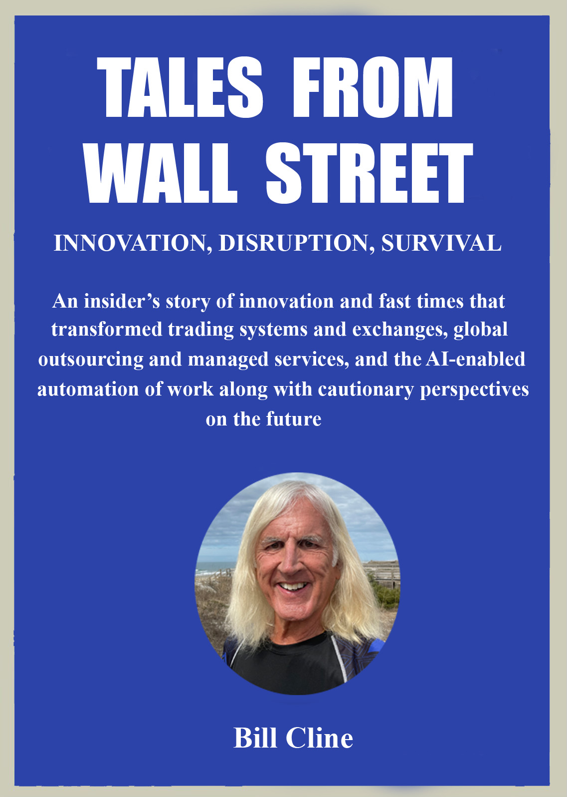

The Wall Street Fast Lane
No matter what you read or saw in movies about Wall Street in the '80s and '90s it was much wilder than that. Weed and cocaine were everywhere and like alcohol often part of the business day, business deals, or after work entertainment. But it was also a period of transformational innovation and market disruption. Fortunes were made, some were lost, and an entire ecosystem of products, services, and businesses fed off the financial largesse of Wall Street fueled by digital transformation of trading systems, market data, and exchanges. Exclusive and expensive clubs, bars, restaurants, and luxury real estate, jewelry, clothing, and car retailers spent all year cultivating relationships with superstar traders and senior financial industry executives.
Like hungry western bears eagerly awaiting the all-you-can-eat buffet of the annual salmon migration everybody on and around Wall Street counted down the days to awards of 6, 7, and 8 figure bonuses at big investment banks and funds. Financial beneficiaries extended well beyond traders and top executives to include IT and software professionals developing the advanced technology, applications, and algorithms that made everything possible. It included operations staff that kept ever larger and more complex trades flowing smoothly while maintaining real-time trading positions, risk exposure, P&L summaries, and appeasing regulators.
There were plenty of trading and investment management profits to go around on Wall Street during these years, and the often life changing bonuses were expected by professionals at all levels. For many the annual bonus was larger than their guaranteed yearly salary, the size correlated to measurable performance excellence in someone’s given role. Artificial preferences regardless of justification were unheard of, and excuses didn’t work on Wall Street or at the vendors and big consulting firms serving the financial services industry.
Sometimes bonuses were expected by employees who thought they were better than they were but they usually weren’t around very long. Wall Street ran on numbers, and tangible performance results were all that mattered for compensation and promotion decisions. Performance could mean trading profits for a trader, returns for an investment manager, or trade processing speed and operational efficiency in the middle and back office. Getting a smaller than expected bonus was disappointing, but most people accepted the need to improve performance relative to peers. If someone received no bonus in a given year it was a message to get better fast or call your favorite headhunter. No bonus was usually a precursor to termination as part of the yearly culling of the bottom 10+% of performers.
Wall Street high performance culture was survival of the most deserving, and the transparent, preference-free pursuit of excellence produced superior business outcomes and happier, more productive employees. If you performed well on Wall Street your job was secure and you made a lot of money. Nobody cared about race, color, nationality, sex, gender, academic credentials, politics, or who somebody slept with. A transparent meritocracy was fairer than artificial preferences that gave unearned advantages to some while disadvantaging others, leaving any preference proponents to justify why, for how long, to what degree, and for what groups in what proportions. The arguments didn’t work.
Wall Street employees at all levels were very well compensated, but so were the hardware, software, application, data, and services vendors that created, developed, sold, and delivered capital markets innovation that made lucrative profits possible. My early career moved market data and applications from stand-alone terminals into integrated video switching systems. Then those were made obsolete when we introduced digital trading systems with real-time datafeeds and applications, high-speed networks, and sophisticated trading algorithms. Digital disruption was worldwide, changing the capital markets industry landscape and resetting the definition of global winners and losers.
As a young trader I held telephone handsets in both hands while “squawk boxes” streamed live trade talk from market makers and I obsessed over stacks of computer screens. The cacophony of noise on a big trading floor with thousands of traders was overwhelming to outsiders. Special acoustic treatments made sure shouting on the trading floor could be heard by traders across the room, specialized lighting minimized screen glare, and customized HVAC systems dissipated heat from thousands of traders and computer screens in a confined space.
Paper trade tickets were written by hand to be manually entered into a trade processing system off the trading floor. As I learned more about technology I realized those slow, cumbersome trading processes wouldn’t last on Wall Street. I envisioned how trading would change until I had a chance to change it myself as an entrepreneur. High-speed computers, real-time data and networks, software and algorithms, and new alternative electronic markets were both enablers and results of the transformation.
I moved from trading to designing and selling trading technology and services before traders like me were made obsolete by algorithms and software applications. I repurposed my trading experience to develop game-changing innovations in real-time systems, datafeeds, applications, and services that turned art of the possible into cost-effective reality. Digital disruption and the proliferation of new electronic markets spread worldwide, transforming 200 years of financial market history and rendering large trading floors unnecessary for both financial institutions and exchanges.
Two of my companies designed and built the trading and market data distribution systems that changed Wall Street to make it highly automated and real-time. Previously stereotyped and forgotten mathematicians and software engineers became highly compensated “quants", “data scientists", and new members of the cool crowd. They translated analytically grounded trading strategies into applications and algorithms that beat the market, executed by ultra high-speed computers and networks.
A close partnership formed between Wall Street technologists coveting the last microsecond of speed advantage and the computer and networking companies leading the global performance race. Wall Street readily embraced any innovation that could create competitive advantages, implementing and often investing in the companies delivering those innovations. My companies integrated state-of-the-art hardware, software, data, and networks into trading and data distribution systems we installed on trading floors worldwide. Later in my career I sold long-term contracts to run and continuously improve them.
By the 1990s every high-performance IT vendor had dedicated sales teams focused on Wall Street and financial services. They wanted the revenue but also the drug-like high from winning on Wall Street that they leveraged in national and international marketing campaigns. In those days real drugs could also play a role in how those Wall Street sales were won given pervasiveness in the financial industry. It was all part of the game, and no individual was going to change it.
I developed close relationships with senior trading and IT executives on Wall Street and in Silicon Valley who would help me especially at my smaller entrepreneurial companies. They introduced me to decision makers I didn’t know when I was pursuing a big sale, and I reciprocated with great dinners, shows, concerts, and the hottest underground big city nightlife. I became more visible in the media than anyone else in capital markets IT and services, and that enhanced my credibility with clients and important strategic partners.
Wall Street digital innovations and real-time data spread to other industries as the enabling technologies matured and prices decreased. Vivek Ranadive, one of my former trading system competitors, led cross-industry adoption by evangelizing the “real-time enterprise” and promoting “the power of now” after founding TIBCO. Later in my career I also moved beyond financial services to introduce outsourcing, managed services, and AI-enabled software process automation across industries. But the origins all traced back to the real-time algorithms and digital disruption of Wall Street and exchanges.
The trading floor was an adrenaline rush from my first exposure as a recent college graduate. I wouldn’t have lasted long as an office worker, but I almost went into music full time. I began playing professionally when I was 15, met a lot of girls, and made plenty of money that paid my Duke University tuition when my family couldn’t have afforded it. I was still considering a performing and recording career at Duke but my Warner Elektra demo record was stagnating for some combination of insufficient talent and bad timing. Disco was the new genre and I was a rocker, so I accepted a management trainee job at a big bank. But I wasn’t happy there and was rethinking everything until I discovered trading.
Wall Street paid top dollar to compensate for the extreme mental and physical stress and constant pressure, and retaining people was difficult because other firms were always hiring good talent while headhunters circled like sharks. Everybody successful on Wall Street regardless of role or level had valuable and scarce industry skills which gave them strong cards to play for promotion and advancement. Meanwhile recruiters looked for any opportunity to poach good talent and went to extremes to get it.
Wall Street innovations in trading and new electronic markets made investing cheaper and more accessible for everyone, and individual investors stopped having to pay trading commissions. Digital and regulatory transformation made institutional trading and investing more liquid, anonymous, and resulted in better prices and trade executions that benefitted both retail and institutional investors.
Wall Street money also sponsored charitable events that raised millions for worthy causes, characterized by donors as “giving back” for their good fortune. But it often seemed the charitable cause was secondary to rich and successful people partying together. I went to dozens of “charity galas” and award ceremonies “honoring” whoever had donated the most money to the cause that year that cost me thousands of dollars for a table. Like luxury retailers charities were another beneficiary of the broader Wall Street and capital markets ecosystem of money and wealth.
Wall Street success wasn’t meant to be equal but earned through measurable performance excellence. Performing in bands on stage helped me develop the skills, personality, and confidence to interact with senior executives and traders. I developed business relationships in ways my competitors couldn’t with access to cool and exclusive restaurants and nightlife in New York, Chicago, London, Tokyo, Sydney, Hong Kong, and other global hotspots. A great dinner and drinks were a given, but for many of my clients the night was just beginning after dinner.
I took them to hot restaurants, clubs, and bars few knew about and even fewer could get into, all part of client socialization in the Wall Street fast lane. I took them to sold out Broadway shows, museum openings, private suites at concerts and sporting events, or a high-end strip club if a client was so inclined. I played any cards I had to win deals but played by the rules without stepping over admittedly gray lines. During the '80s and '90s there were few if any real lines except bribes and money changing hands, and as rules and policies changed over time I changed too but everybody had less fun.
Today’s highly restrictive rules for business socialization often result in inferior business outcomes, sacrificing the strategic alignment and innovative new ideas that came from more relaxed out-of-office dialogue. Personal relationships and interaction that developed made business more fun and productive, but I never saw any abuse or corruption. Now extreme restrictions on permissible client entertainment and cost caps can make a Chick-fil-A meal with a Cookies & Cream milkshake look like a decent option.
I pioneered different product, data, and service innovations in ways few others ever get to do even once, sometimes pursuing my own ideas and sometimes making the ideas of others real. Wall Street was the ultimate risk/reward culture where target ROI could be realized in a single lucrative trade or by avoiding a big risk or mistake. Identifying business inefficiencies and challenges, applying critical thinking and problem solving, and understanding what cutting-edge technologies and services could do became core skills. That along with a deep understanding of trading and capital markets led to my most impactful and innovative new product and service ideas.
After the digital transformation of Wall Street in the late 1980s the marginally controlled trading floor chaos I loved was replaced by computers, networks, datafeeds, and real-time a algorithms and applications running in an equipment room. There were many fewer traders, shrinking trading floors, and legacy exchanges were fighting for survival against new market entrants introducing new trading methods. Now the action was in the flashing lights and perpetual hum of high-speed computers and specialized cooling systems in equipment rooms. Computers were faster, mostly smarter, could analyze infinitely more prices and markets simultaneously, and made fewer mistakes than human traders. The computers also didn't drink or do drugs, complain, screw the employees, succumb to stress requiring pharmaceuticals or therapy, or get paid millions in salary and bonus only to still want more.
Wall Street and global capital markets operated at a pace and with pressures few people could conceive of or endure, but some people thrived in the adrenaline-fueled lifestyle if you avoided too many crutches. Weed and alcohol had long been part of the Wall Street scene, but the surge of cocaine usage in the 1980s was different and I saw it ruin lives. The financial and personal rewards of working on Wall Street were diverse and many but came at a cost. I was lucky the 1980s ended because constant travel, extreme stress and pressure, drugs and alcohol, and partying into the early morning hours were taking a physical and mental toll on me too.
By the mid-1990s things were settling down and regulatory changes were spurring innovation. There were new alternatives to traditional exchanges like crossing and matching systems and “dark pools" that internalized orders. Most provided better prices, greater anonymity, and more transparent liquidity leading to better execution prices on large trades like those of big institutional investors and funds. High-frequency and algorithmic trading expanded from stocks into bonds, derivatives, commodities, and foreign exchange. Trades were now executed by software and “smart algorithms” on fast, liquid electronic markets competing for order flow. For high frequency arbitrage traders and market makers milliseconds of speed difference meant low risk trading profits.
Trading was a nonstop IT arms race for more speed, and specialized hardware, software, data, and services vendors sold financial institutions the means to compete and win. Everybody profited, some more than others. Digital transformation and algorithmic trading meant tighter spreads, better trade executions, and improved risk management and investor reporting. Both institutional and retail investors benefitted from better execution prices, and brokerage commissions became a thing of the past.
The stately marble environs of the NYSE or the amphitheater “trading pits" of the Chicago commodity and options exchanges had become expensive liabilities. Big trading floors were good TV sets for shows like CNBC’s Squawk on the Street where I did interviews, but nothing significant happened on exchange trading floors any longer after trading and market making was automated. The cost of maintaining trading floors and legacy manual processes diverted investment from innovation and growth, and new alternative exchanges took significant market share from traditional exchanges. The innovators expanded into new geographies, traded more asset classes electronically for longer hours, and prospered while legacy exchanges that didn’t adapt either died or were acquired by the winners.
Even my former client NYSE was ultimately acquired by a new startup client that my project team brought into existence, the Intercontinental Exchange (ICE). NYSE ignored competitive threats for too long and failed in attempts to transform their IT environment and execute a credible growth strategy. The need for investment capital to fund growth, forge alliances, and make acquisitions was why most private member-owned exchanges had become public companies. NYSE leadership ignored my advice for too long and found themselves unable to compete with aggressive European exchanges and new alternative markets.
After resigning as the Accenture capital markets global managing partner 6 years after the IPO I worked independently for a few years before joining KPMG and leading Intelligent Automation. It gave me a chance to make my new ideas for using software process automation and AI to drive innovation and operational efficiency beyond the limitations of global outsourcing. But after going back to work I found business life and norms had changed, and not for the better.
The preference-free meritocracy of Andersen Consulting and Accenture had given way to unearned institutionalized preferences and diversity goals. Goals became de facto became mandates for quotas in hiring, promotions, and compensation. I didn’t like it nor did high performers losing out to preferred identity group members with inferior qualifications and performance metrics. Business outcomes suffered, and top leadership was too isolated from employees doing the work to see the widespread dissatisfaction. Leadership partners ensconced in top floor offices believed the empty corporate platitudes HR promoted to respond to bias-influenced pressures, but the result was that new hire skill levels declined and high performers not in a preferred identity group resigned.
I also had a front row seat to the separation of Andersen Consulting (AC) from Arthur Andersen (AA) and our global re-branding as Accenture preceding the blockbuster IPO. I’ll share the inside story of how we won the right to separate from AA and previously untold stories of intrigue and political maneuvering along the way. Billions of dollars were at stake, and the story of how we executed a separation, global re-branding, and IPO in little more than a year will be on business school curriculums for many years.
It was one of the fastest, most complex, and highest value global business transformations ever undertaken, and the IPO was only 2 months before the 9/11 terrorist attacks. You’ll hear about the Andersen Worldwide global partners meeting in Paris where our future was decided and internal strategies to prevail in the International Chamber of Commerce arbitration. I experienced it all up close as the global client partner for our lead investment banker Goldman Sachs and as the capital markets managing partner speaking on the roadshow marketing Accenture IPO shares to big institutional investors.
I was in New York City on 9/11 and survived through a highly improbable twist of fate as my Accenture industry practice hosted a market data conference that morning at Windows on the World. I survived while hundreds of colleagues, clients, and friends at the conference and working in the towers didn’t. Windows on the World was on the 106th floor of One World Trade Center, and nobody escaped from up there. My son Parker was only 1 year old on 9/11 and could have easily grown up without a father, all because Islamic terrorists wanted to kill people just going to work clueless about their bullshit cause or grievance.
In the weeks after 9/11 Accenture helped clients and the city of New York recover even as we dealt with our own personal and professional losses. The region’s telecommunications and network infrastructure was destroyed in lower Manhattan, and the global financial industry would break down without communication links between New York and the rest of the world reestablished. Nothing was ever the same afterwards, even going through building security to meet with clients. The events of 9/11 prompted me to leave New York and move to South Carolina in 2003, but I still flew to NY or somewhere in the world every week for another 15 years.
Wall Street in the '80s and '90s was wilder than even the most sensationalist books and movies portray, but I survived and thrived in it. I was a life in the fast lane, but it was also a once in 100-year period of innovation, market disruption, and the digital transformation of trading, capital markets, and global professional services. It created lucrative careers on Wall Street and in the ecosystem around it if you were good enough and handled the pressure. Later in my career I applied a similar approach to innovation to transform other industries with global outsourcing and AI-enabled software process automation. My work in intelligent automation was the start of AI eliminating and changing human jobs that’s still playing out today. Anyway, here’s my story…
